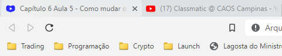

Usar os filtros do Google para busacar imagens
sem diretos autorais (ferramentas>filtros de licenças)
Outra opçao são os sites contidos no pdf da aula 1 cap 6
Como por exemplo:
Unplash
Pexels
Tambem é possivel usar o
Gimp, para manipular imagens
para serem usadas nos sites.
Existem varios formatos de imagens, Jpeg, png, gif, por exemplo.
jpeg tem alta compactaçao, sendo o melhor formato para imagens grandes
png cria imagens melhores com transparencia porem arquivos maiores
Demonstraçao de como usar o Gimp e sobre tamanho de imagens no link da aula:
é necessario reduzir o tamanho das imagens no sites para economizar
espaço e tambem deixar o site o mais rapido possivel, sites pesados e
consequentemente lentos não são atraentes para o usuario e não aparecem
nas primeiras paginas dos buscadores.
<img src="Imagem da pasta" alt="Descriçao">

a tag a ser usada é *img
Dica: apertando ctrl + espaço com o cursos no meio das aspas abre todos os arquivos da pasta
a unica mudança é a definição da pasta onde se localiza o arquivo
<img src="localização da imagem ex:imagens/imagem.png" alt"Descrição"
no lugar da localizaçao da imagem no pc, devemos colocar o URL da imagem.

Os favicons são os icones no titulo do site:
Favicons podem ser encontrados em Icon Archive
Caso queria cria um favicon do zero Favicon.cc
O Favicon.io Converte arquivos,textos e imagens em favicons.
Para colocar o icon, colocar a tag <link> no head acima do title e selecionar o .ico

Voltar para a pagína inicial do módulo 01
Siga para o Cap 07